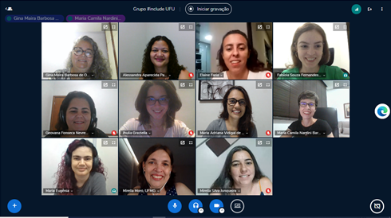

Home
Por mais mulheres na computação!
Notícias
-
II Meninas na Computação na TechWeek 2022 - Novembro, 2022
A segunda edição do evento Meninas na Computação foi realizada em conjunto com a FACOM TechWeek.
-
Projeto de extensão aprovado para apoiar o ensino de pensamento computacional - Outubro, 2022
Para despertar o interesse de meninas estudantes do ensino médio em Computação, o projeto tem como objeto a realização de palestras e um minicurso de Introdução ao Pensamento Computacional, voltado para meninas do 1º ano do ensino médio de uma escola pública de Uberlândia-MG. Esse projeto contará com o apoio do PET-SI e PET-BCC.
-
Pôster apresentado no WIT 2022 - Agosto, 2022
-
Projeto de ensino aprovado para apoiar o grupo #include <girls> - Junho, 2022
O Projeto de Ensino "Incluindo Meninas na Computação: mentoria e rede de apoio para alunas da graduação" foi aprovado no Edital PROGRAD 07/2022 do Programa de Bolsas de Graduação. Esse projeto de ensino está inserido no subprograma InclUFU e contará com o apoio de uma aluna bolsista e uma aluna colaboradora na sua realização.
-
Parceria com o Programa Meninas Digitais (SBC) - Março, 2022
Inclusão oficial do grupo #include <girls> como projeto parceiro do Programa Meninas Digitais da Sociedade Brasileira de Computação.
-
I Meninas na Computação na TechWeek 2021 - Dezembro, 2021
O Meninas na Computação foi a primeira edição de um evento acadêmico que buscou incentivar o ingresso de meninas e mulheres em carreiras e cursos nas áreas de Computação e Tecnologia da Informação. Esse evento foi realizado em conjunto com a FACOM TechWeek.
Sobre
O projeto busca desenvolver ações tanto para incentivar o ingresso de mulheres em cursos nas áreas de Computação e Tecnologia da Informação, quanto para apoiar as alunas durante a realização de seus cursos.
Dentre os objetivos específicos do projeto estão:
- Promover atividades que incentivem as estudantes do ensino médio público de Uberlândia e região
a ingressarem em cursos das áreas de Computação e Tecnologia da Informação;
- Fomentar discussões a respeito das diversas áreas de atuação,
dos desafios e das oportunidades para mulheres na área de TI por meio de redes sociais e da
realização
de eventos;
- Apoiar as discentes dos cursos da FACOM/UFU por meio de monitorias e tutorias.
Equipe
Membros Atuais
-
Professoras:
|
Alessandra Aparecida Paulino |
Elaine Ribeiro de Faria Paiva |
|
Fabíola Souza Fernandes Pereira |
Gina Maira Barbosa de Oliveira |
|
Maria Adriana Vidigal de Lima |
Maria Camila Nardini Barioni |
|
Mirella Silva Junqueira |
-
Bolsistas e Voluntários:
|
Ana Barbara Campos Conti |
Ana Julia Alves Ferreira Silverio |
|
Ana Roling Silvério |
Anna Letycia Fernandes Reis |
|
Gabriel Cardoso Brandão de Sousa Amaral |
Gabriel Couto de Freitas |
|
Giullia Rodrigues de Menezes |
Isadora dos Reis Gonçalves |
|
Jhully Vitoria Nunes Leite |
Laura de Barros Moreira |
|
Marina Bagliano Silva |
Murielly Oliveira Nascimento |


Membros Anteriores
|
Maria Eugenia de Avila Ferreira |
Nayara Terezinha Nunes |

Eventos
-
II Meninas na Computação (Novembro, 2022)
-
A programação da segunda edição do evento Meninas na Computação contou com a realização de
três atividades acadêmicas e científicas:
- Palestra sobre Desafios das mulheres na academia e no mercado de trabalho: forças “invisíveis” que influenciam a representatividade, com Karin da Costa Calaza (Professora Titular da Universidade Federal Fluminense – UFF).
- Minicurso para alunas do ensino médio de escolas públicas de Uberlândia e região.
- Painel sobre Mulheres na Computação (passado, presente e futuro), com as convidadas Zaima Milazzo (Diretora de Inovação da Algar Telecom e Presidente do Brain, Centro de Inovação em Negócios Digitais fundado pela Algar Telecom), Mariângela Gomes Setti (Professora Titular da Universidade Tecnológica Federal do Paraná – UTFPR), e Raquel Fialho Lafetá (Gerente de Engenharia da Zé Delivery – Ambev e ex-aluna da FACOM). O evento foi aberto para a comunidade externa à Universidade, especialmente alunas do ensino médio de escolas públicas de Uberlândia e região. Esse evento foi realizado em conjunto com a FACOM TechWeek, evento anual organizado pela Faculdade de Computação da UFU, em formato totalmente online/remoto.
I Meninas na Computação (Dezembro, 2021)
O Meninas na Computação foi a primeira edição de um evento acadêmico que buscou incentivar o ingresso de meninas e mulheres em carreiras e cursos nas áreas de Computação e Tecnologia da Informação, principalmente em Uberlândia, por meio de duas atividades acadêmicas e científicas: um minicurso e um painel. O evento foi aberto para a comunidade externa à Universidade, especialmente alunas do ensino médio de escolas públicas de Uberlândia. Esse evento foi realizado em conjunto com a FACOM TechWeek, evento anual organizado pela Faculdade de Computação da UFU, em formato totalmente online/remoto.
Projetos
-
Projeto de ensino "Incluindo Meninas na Computação: mentoria e rede de apoio para alunas da graduação"
Apoio: Edital PROGRAD 07/2022 do Programa de Bolsas de Graduação
Vigência: Julho/2022 - Dezembro/2022
Descrição: Com o intuito de contribuir para a melhoria do desempenho acadêmico e a permanência das alunas ingressantes dos cursos da FACOM, pretende-se explorar, dentro do contexto deste projeto, a elaboração e o desenvolvimento de atividades de mentoria. A proposta é que duas alunas veteranas (uma aluna bolsista e uma aluna colaboradora) dos cursos da FACOM/UFU (alunas mentoras), Campus Santa Mônica, sejam selecionadas para apoiar as alunas ingressantes (alunas mentoradas), dos cursos BCC e BSI, no contexto das disciplinas de introdução à programação. De maneira geral, as atividades de mentoria planejadas deverão envolver tanto a divulgação científica para destacar o papel das mulheres na Computação, quanto a capacitação tecnológica por meio da realização de grupo de estudos sobre programação.
Coordenação: Profa. Maria Camila Nardini Barioni
Alunas envolvidas: Anna Letycia Fernandes Reis (bolsista) e Isadora dos Reis Gonçalves (colaboradora)
-
Projeto de extensão "SIE 26896 - Introdução ao Pensamento Computacional para Meninas do Ensino Médio"
Vigência: 08/10/2022 a 20/01/2023
Descrição: O projeto tem como objetivo principal fortalecer a participação feminina nos cursos de Computação da Universidade Federal de Uberlândia, visando o equilíbrio e a diversidade de gênero nos cursos de Ciência da Computação e Sistemas de Informação. Para despertar o interesse de meninas estudantes do ensino médio em Computação, a presente proposta tem como objeto a realização de palestras e um minicurso de Introdução ao Pensamento Computacional, voltado para meninas do 1º ano do ensino médio de uma escola pública de Uberlândia-MG. O minicurso terá duração de 12h e acontecerá aos sábados nas dependências da própria escola, e duas palestras estão previstas. O tema do Pensamento Computacional será abordado de forma desplugada (sem necessidade de uso de computador) e serão propostas atividades com o objetivo de ensinar os fundamentos da Ciência da Computação. As atividades estão estruturadas em: (i) Representação de Informações: formas utilizadas pelos computadores para a representação de dados (números binários, texto e imagens) e compressão de dados; e (ii) Algoritmos: métodos computacionais de uso frequente no cotidiano, tais como ordenação e busca de informação. As ações devem contar com a participação de estudantes femininas dos cursos de Ciência da Computação e Sistemas de Informação da UFU, visando reforçar a autoestima das alunas e promover a socialização de conhecimento e experiências. Como forma de avaliar a participação das alunas do ensino médio, pretende-se a adoção de um questionário ao final do minicurso, possibilitando análises quantitativas e qualitativas relacionadas ao projeto. Estão previstas 20 vagas para meninas, porém, caso não sejam preenchidas, poderão ser destinadas aos meninos interessados.
Coordenação Geral: Maria Adriana Vidigal de Lima
Coordenação: Alessandra Aparecida Paulino, Elaine Ribeiro de Faria Paiva, Fabíola Souza Fernandes Pereira, Gina Maira Barbosa de Oliveira, Maria Camila Nardini Barioni e Mirella Silva Junqueira
Alunas: Ana Barbara Conti, Ana Julia Alves Ferreira Silverio, Gabriel Cardoso Brandão de Souza Amaral, Jhully Vitoria Nunes Leite, Laura de Barros Moreira
Publicações & Pôsteres
2022
Relato de experiência da criação do grupo #include <girls>: onde estamos agora e o que vem a seguir,
In: WOMEN IN INFORMATION TECHNOLOGY (WIT), 2022, Niterói. Anais [...]. Porto Alegre: Sociedade Brasileira de Computação, 2022. p. 245-250. ISSN 2763-8626.,
(BARIONI, Maria Camila N.; FARIA, Elaine R.; LIMA, Maria Adriana V.; OLIVEIRA, Gina M. B.; PEREIRA, Fabíola S. F.; PAULINO, Alessandra A.; JUNQUEIRA, Mirella S.)
Pôster: [PDF]
DOI: https://doi.org/10.5753/wit.2022.222849
Material
Em breve...
Contato
Para mais informações, entrar em contato através das nossas redes:
- E-mail: includegirls@facom.ufu.br
- Instagram: https://instagram.com/includegirls.ufu
- Facebook: https://www.facebook.com/includegirls.ufu
Resumo
A neurociência tem demonstrado que grande parte do processamento cerebral ocorre de forma não consciente. O viés implícito é um fenômeno natural no qual o encéfalo forma constantemente associações automáticas de modo a gerar respostas rápidas frente as diferentes situações. O viés implícito que envolve tanto avaliações favoráveis quanto desfavoráveis é ativado involuntariamente e sem consciência ou controle intencional do indivíduo (Blair, 2002; Rudman, 2004). Portanto, várias pistas do ambiente podem implicitamente afetar nosso comportamento, e em última instância nossas avaliações, comportamentos e decisões. Assim, como as pessoas não têm acesso consciente para determinar seu viés de acordo com suas convicções pessoais, este viés pode ocorrer mesmo que a pessoa esteja convencida de que nunca se comportaria de modo diferente de suas convicções. Estas associações implícitas que nosso encéfalo faz, podem nos fazer sentir e tomar atitudes em relação a outras pessoas baseadas em características como raça, etnia, gênero, idade e aparência, mesmo que a princípio não concordemos conscientemente com elas. Apesar de as mulheres já perfazerem 60% dos formandos nas universidades do Brasil, a distribuição nos cursos de diferentes áreas é significativamente desigual. Além disso, as mulheres e pessoas negras ainda se encontram sub-representadas em posições de gestão e liderança, tanto na academia quanto na política e no mercado de trabalho. Existem várias razões que poderiam explicar esse fenômeno, abordaremos mais especificamente dados da área da neurociência sobre o funcionamento do cérebro e viés implícito.